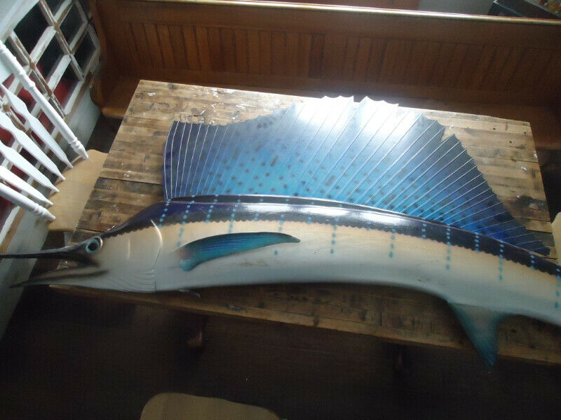
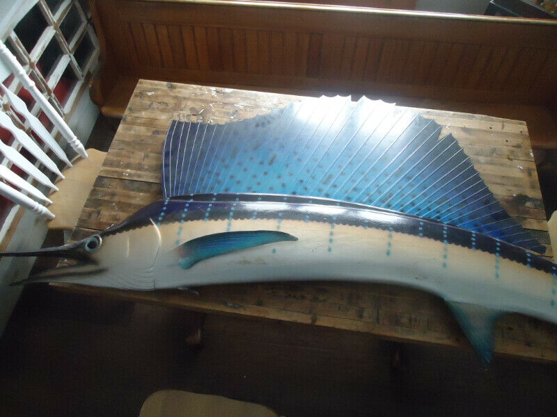
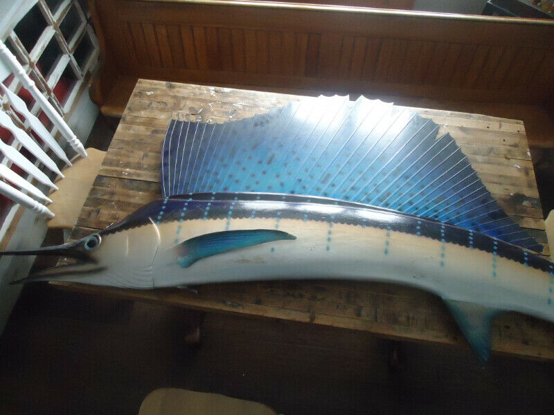

Kijiji, listing images
Collected images from listings on Kijiji for ‘taxidermy’ in the Ontario area.
I began my research into the possibilities of connecting the concept of an ‘archive of feelings’ with taxidermy by searching locally on Kijiji. I hoped to familiarize myself beyond my surface-level understanding of taxidermy and wanted to explore more of the current colloquial culture and terms used within the space. I ended up with a fascinating look into the self-documented lives of the province’s buyers and sellers of hunting trophies and niche decor. More details about my thoughts can be found in The Archive,¹ and some of my previous works that I mention can be found here, here, and here.

1. The Archive, Section 02, Folder A.
ITEM CODE: 02.A.02.D